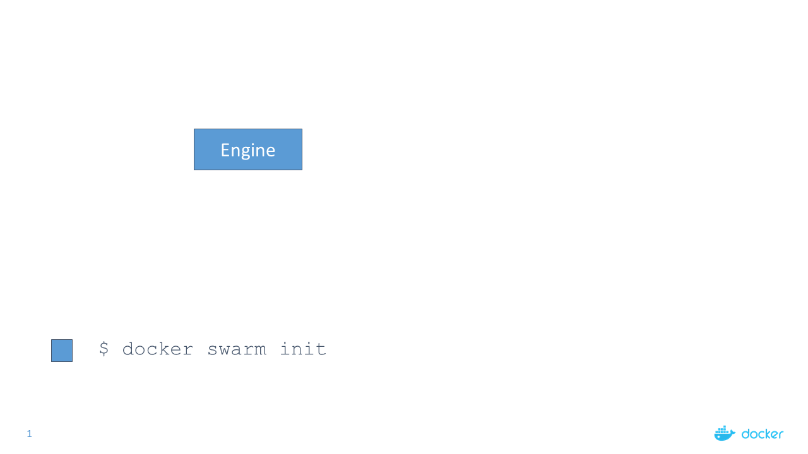
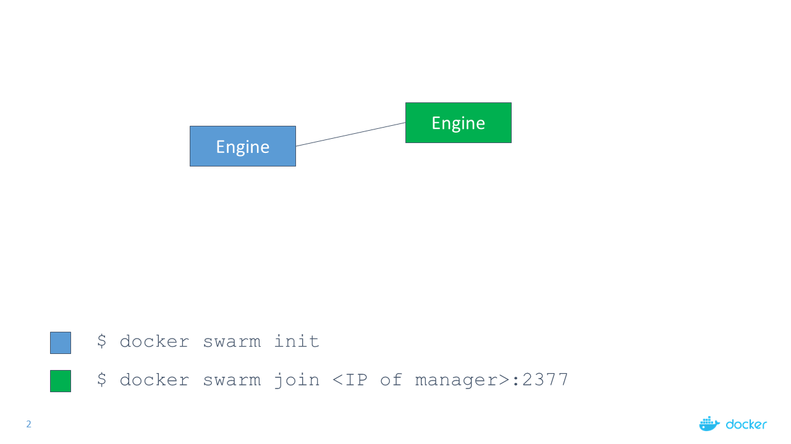
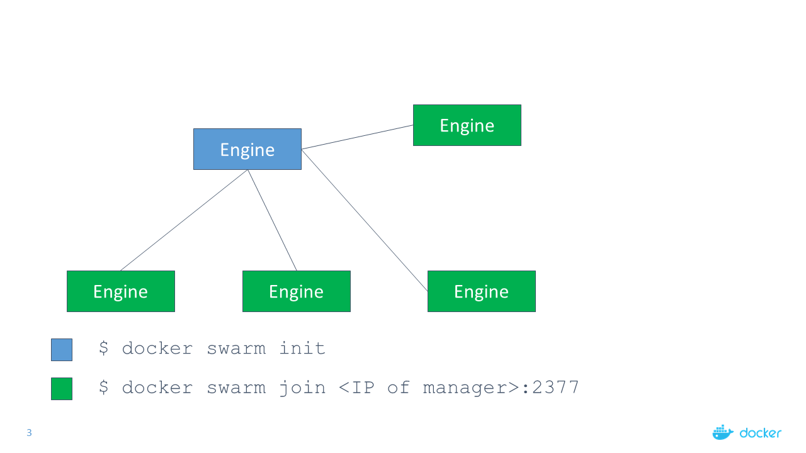
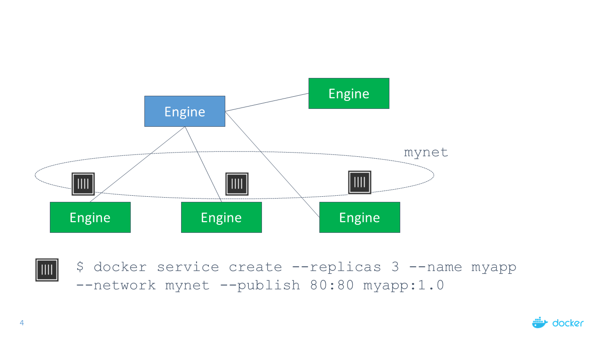
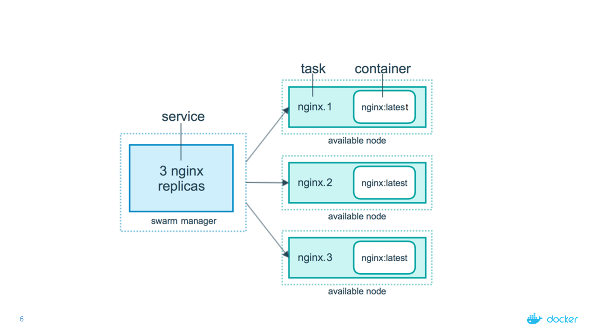

Mini Lecture: Docker Engine Swarm Mode
Mini Lecture: Docker Engine Swarm Mode
Overview of Swarm Mode
- Docker Engine 1.12 features SwarmKit integration
- The Docker CLI features three new commands:
docker swarm (enable Swarm mode; join a Swarm; adjust cluster parameters)docker node (view nodes; promote/demote managers; manage nodes)docker service (create and manage services)
- The Docker API exposes the same concepts
- The SwarmKit API is also exposed (on a separate socket)
Key concepts
- Swarm
- A cluster of Docker Engines where services are deployed
- Engines participating in a cluster are running in swarm mode
- Docker Engine CLI includes commands for swarm management, service deployment and orchestration
- Node
- An instance of a Docker engine participating in a Swarm
- Can be a manager node or worker node
- Managers are also workers
Services
- A service is the definition of the tasks to execute on the worker nodes
- Primary point of user interaction with the swarm
- A service is specified by its desired state: which image to run, how many instances …
- Replicated vs global
Tasks
- A task represents a unit of work assigned to a node
- Atomic scheduling unit of swarm
- Manager nodes will assign tasks to worker nodes based on the number of replicas specified in the service definition
- A task corresponds to a specific container
Illustration of Swarm Mode

Illustration of Swarm Mode (cont'd)

Illustration of Swarm Mode (cont'd)

Illustration of Swarm Mode (cont'd)

Illustration of Swarm Mode (cont'd)
